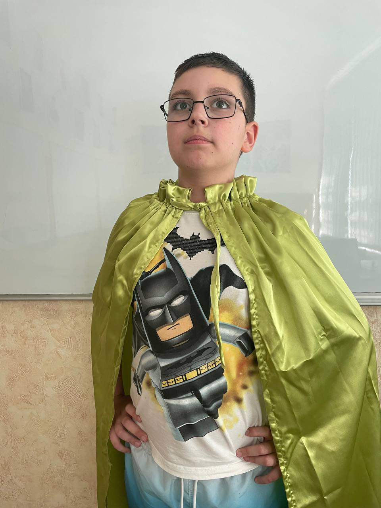

Супер фантастик
| Моя суперсила | Дуже гарна фантазія-можу фантазувати різних героїв зі своїми здібностями. |
| Які якості мене роблять героем | Допитливість, кумендність, добро, співчуття, енергійність, патріотичність, кмітливість. |
| Мій девіз | Роби справу на 100%. Будь таким як ти є. |
| Мій символ | |
| Мій помічник або команда | Герої ігр, фільмів-вони мене підтримують, допомагають зі складними задачами. |
| Моя слабкість | Погане слово, яке кажуть про мене. |
Мій день у ролі супергероя
Коротко: зранку я зробив мамі каву, вдень попилисосив, ввечері помив чашку.

Як я можу використати свою суперсилу на благо інших?
- Придумувати героїв, які допомагають дітям справлятись зі страхами, тривогою або самотністю.
- Писати історії або комікси про добрих персонажів, які надихають інших вірити в себе та робити добрі вчинки.
- Допомагати друзям створювати власних героїв, щоб разом розвивати уяву та дружбу.
- Створювати героїв, які у казковій формі будуть вчити дітей бути добрими, чесними й справедливими.